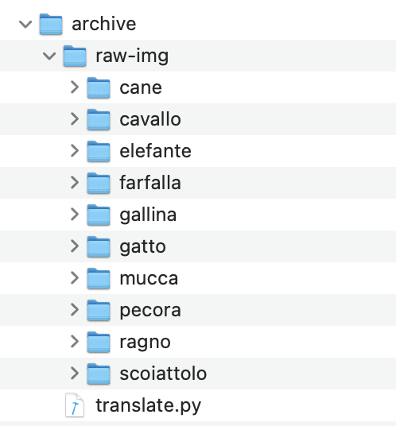

Create Thumbnails Concurrently in Python (3x faster)
The ProcessPoolExecutor class in Python can be used to create multiple thumbnail images at the same time.
This can dramatically speed-up your program compared to creating thumbnail images sequentially, one-by-one.
In this tutorial, you will discover how you can create and save thumbnail images of thousands of photos concurrently using a process pool.
After completing this tutorial, you will know:
- How to create thumbnail images one by one in Python and how slow it can be.
- How to use the ProcessPoolExecutor to manage a pool of worker processes.
- How to use the ProcessPoolExecutor to create thumbnail images concurrently.
Let's dive in.
Create Thumbnail Images One at a Time (slowly)
Creating thumbnail images from photos is a common task.
We may need to create thumbnails for a large number of photos in a batch, such as all photos in a directory. This could be for a personal photo album or a website project.
This is not difficult if there are just a few photos, but it can become slow if there are hundreds of photos and painfully slow if there are thousands or millions of photos.
Let's explore this project as the basis for how to use the ProcessPoolExecutor class effectively to execute tasks concurrently.
Download Animal Image Dataset
Firstly, we need a directory of photos that we can load and convert into thumbnail images.
There are many options, but perhaps the easiest is to download a dataset of photos used for image recognition.
In this case, we will use a dataset of animal photos made available on the Kaggle website here:
Download the dataset by clicking the download button. Note: you will require an account on kaggle.com in order to download this dataset. It will only take a moment to create. I provide a mirror of the photos we will be using further down.
The dataset is about 614 megabytes and will take a few moments to download, depending on the speed of your internet connection.
The dataset is downloaded as archive.zip. Unzip the archive and select a folder of images you'd like to work with.
In this case, we will work with pictures of cats located in the archive/raw-img/gatto/ in the unzipped archive.
Copy the gatto folder to your local working directory where you will be writing Python scripts.

You can download all photos in just the gatto directory directly from a mirror here:
Iterate Files in Directory and Create Paths
First, we need to enumerate all images files in the directory.
This can be achieved using the listdir() function from the os module. This will return the name of each file in the directory.
We can then create a full path for each filename by connecting the filename with the path to the directory using the join() function from the os.path module.
For example:
...
# list all images in the source location
for filename in listdir(image_path):
# construct the input path
inpath = join(image_path, filename)
Next, we can create a target filename to which we will save the thumbnail images.
We can do this in a few steps.
First, we can take the filename and split it into the name part and the file extension using the splitext() function in the os.path module.
...
# separate the filename into name and extension
name, _ = splitext(filename)
We can then create a name part of the filename with a _thumbnail string at the end.
...
# construct a new filename
out_filename = f'{name}_thumbnail.{ext}'
Finally, we can join the filename with the output path for the directory where we intend to save all of the thumbnail images.
...
# construct the output path
outpath = join(save_path, out_filename)
Tying this together, the get_output_path() function below takes the name of the target directory for thumbnail images, the filename of the image to be loaded and a new file extension (in case we choose to change the image file type), and returns an output path for the thumbnail image.
# return the output path for a thumbnail image
def get_output_path(save_path, filename, extension):
# separate the filename into name and extension
name, _ = splitext(filename)
# construct a new filename
out_filename = f'{name}_thumbnail.{extension}'
# construct the output path
outpath = join(save_path, out_filename)
return outpath
Load Photos And Save Thumbnails
Next, we need to load the original image, convert it to a thumbnail, and then save the thumbnail image.
This can be achieved easily using the Pillow Python library for image manipulation.
This library is very likely already installed on your system.
If not, you can install it using your preferred Python package manager, such as pip:
pip3 install PillowWe can load an image with Pillow using the Image.open() function within a context manager to ensure that the file is closed correctly.
...
# load the image
with Image.open(inpath) as image:
# ...
Once loaded, we can resize the image using the thumbnail() function and specify the preferred size as a tuple.
For example, a common thumbnail size is 128x128 pixels. If the original image is not square, then the longest edge of the new thumbnail will be 128 pixels, preserving the aspect ratio of the original image.
...
# create a thumbnail image
image.thumbnail((128,128))
Finally, we can save the resized image by calling the save() function with the path, which we prepared earlier.
The save() function allows you to specify the image format as a string constant. In this case we will save all thumbnail images in PNG format, which is popular on the web.
...
# save the thumbnail image in PNG format
image.save(outpath, 'PNG')
Tying this together, the save_thumbnail() function below loads a photo, creates a thumbnail, and saves it to the provided location in PNG format.
# load an image and save a thumbnail version
def save_thumbnail(inpath, outpath):
# load the image
with Image.open(inpath) as image:
# create a thumbnail image
image.thumbnail((128,128))
# save the thumbnail image in PNG format
image.save(outpath, 'PNG')
We can then call this function for each filename in the directory.
The main() function below does this, first specifying the directory that contains the photos and the directory where the thumbnails will be saved.
The directory of photos is then enumerated, input and output paths are constructed calling get_output_path() as needed, then thumbnails are created and saved by calling the save_thumbnail() function.
# entry point
def main():
# location for loading images
image_path = 'gatto'
# location for saving image thumbnails
save_path = 'tmp'
# create the output directory
makedirs(save_path, exist_ok=True)
# list all images in the source location
for filename in listdir(image_path):
# construct the input path
inpath = join(image_path, filename)
# construct the output path
outpath = get_output_path(save_path, filename, 'png')
# create the thumbnail
save_thumbnail(inpath, outpath)
# report progress
print(f'.saved {outpath}')
Tying this together, the complete example of creating thumbnails for all photos in a directory is listed below.
Note: you may want to change the path to the gatto directory to match your system, or move the gatto directory into the same directory as your Python file.
# SuperFastPython.com
# create thumbnails of all images in a directory
from os import listdir
from os import makedirs
from os.path import splitext
from os.path import join
from PIL import Image
# load an image and save a thumbnail version
def save_thumbnail(inpath, outpath):
# load the image
with Image.open(inpath) as image:
# create a thumbnail image
image.thumbnail((128,128))
# save the thumbnail image in PNG format
image.save(outpath, 'PNG')
# return the output path for a thumbnail image
def get_output_path(save_path, filename, extension):
# separate the filename into name and extension
name, _ = splitext(filename)
# construct a new filename
out_filename = f'{name}_thumbnail.{extension}'
# construct the output path
outpath = join(save_path, out_filename)
return outpath
# entry point
def main():
# location for loading images
image_path = 'gatto'
# location for saving image thumbnails
save_path = 'tmp'
# create the output directory
makedirs(save_path, exist_ok=True)
# list all images in the source location
for filename in listdir(image_path):
# construct the input path
inpath = join(image_path, filename)
# construct the output path
outpath = get_output_path(save_path, filename, 'png')
# create the thumbnail
save_thumbnail(inpath, outpath)
# report progress
print(f'.saved {outpath}')
if __name__ == '__main__':
main()
Running the example will create a thumbnail for each photo in the directory saved in a tmp/ directory relative to the Python script.
Each file is loaded and saved as a thumbnail sequentially.
This is relatively slow.
On my system, it takes approximately 10.3 seconds to complete.
How long does it take to run on your system?
Let me know in the comments below.
.saved tmp/1716_thumbnail.png
.saved tmp/1346_thumbnail.png
.saved tmp/373_thumbnail.png
.saved tmp/ea36b40d2df2003ed1584d05fb1d4e9fe777ead218ac104497f5c978a7e8b7bc_640_thumbnail.png
.saved tmp/e831b40a2cf2023ed1584d05fb1d4e9fe777ead218ac104497f5c978a7eebdbb_640_thumbnail.png
.saved tmp/1653_thumbnail.png
.saved tmp/ea35b70e2bf3033ed1584d05fb1d4e9fe777ead218ac104497f5c978a7eebdbb_640_thumbnail.png
.saved tmp/1203_thumbnail.png
.saved tmp/1829_thumbnail.png
.saved tmp/47_thumbnail.png
.saved tmp/1311_thumbnail.png
...
Create a Pool of Workers With the ProcessPoolExecutor
We can use the ProcessPoolExecutor to speed up the process of creating thumbnail images.
The ProcessPoolExecutor class is provided as part of the concurrent.futures module for easily running concurrent tasks.
The ProcessPoolExecutor provides a pool of worker processes, which is different from the ThreadPoolExecutor that provides a pool of worker threads.
You can learn more about the full concurrent API here:
Generally, ProcessPoolExecutor should be used for concurrent CPU-bound tasks, like computing something, and the ThreadPoolExecutor should be used for concurrent IO-bound tasks, like downloading files.
Using the ProcessPoolExecutor was designed to be easy and straightforward. It is like the "automatic mode" for Python processes.
- Create the process pool by calling
ProcessPoolExecutor(). - Submit tasks and get futures by calling
submit()ormap(). - Wait and get results as tasks complete by calling
as_completed(). - Shutdown the process pool by calling
shutdown().
Create the Process Pool
First, a ProcessPoolExecutor instance must be created. By default, it will create a pool that is equal to the number of logical CPUs you have available.
For example, if you have four CPU cores and each has hyperthreading (common for most modern CPUs), then Python will see eight logical CPUs in your system and will configure the ProcessPoolExecutor to have eight worker processes.
This is good for most purposes.
...
# create a process pool with the default number of workers
pool = ProcessPoolExecutor()
You can specify the number of worker processes via the max_workers argument.
This can be a good idea if the tasks you are executing are CPU intensive, in which case you might get better performance by setting the number of works equal to the number of physical (not logical) CPU cores; for example:
...
# create a process pool with 4 workers
pool = ProcessPoolExecutor(max_workers=4)
The max_workers argument is the first argument and does not need to be explicitly named; for example:
...
# create a process pool with 4 workers
pool = ProcessPoolExecutor(4)
Submit Tasks to the Process Pool
Once created, it can send tasks into the pool to be completed using the submit() function.
This function takes the name of the function to call any and all arguments and returns a Future object.
The Future object is a promise to return the results from the task (if any) and provides a way to determine if a specific task has been completed or not.
# submit tasks to the process pool
future = pool.submit(task, arg1, arg2, ...)The return from a function executed by the process pool can be accessed via the result() function on the Future object.
It will wait until the result is available, if needed, or return immediately if the result is available.
For example:
...
# get the result from a future
result = future.result()
The ProcessPoolExecutor also provides a concurrent version of the built-in map() function.
It works in the same way as the built-in map() function, taking the name of a function and an iterable. It will then apply the function to each item in the iterable. It then returns an iterable over the results returned from the target function.
Unlike the built-in map() function, the function calls are performed concurrently rather than sequentially.
A common idiom when using the map() function is to iterate over the results returned. We can use the same idiom with the concurrent version of the map() function on the process pool; for example:
...
# perform all tasks in parallel
for result in pool.map(task, items):
# ...
Get Results as Tasks Complete
The beauty of performing tasks concurrently is that we can get results as they become available rather than waiting for tasks to be completed in the order they were submitted.
The concurrent.futures module provides an as_completed() function that we can use to get results for tasks as they are completed, just like its name suggests.
We can call the function and provide it a list of Future objects created by calling submit() and it will return Future objects as they are completed in whatever order.
For example, we can use a list comprehension to submit the tasks and create the list of Future objects:
...
# submit all tasks into the process pool and create a list of futures
futures = [pool.submit(task, item) for item in items]
Then get results for tasks as they complete in a for loop:
...
# iterate over all submitted tasks and get results as they are available
for future in as_completed(futures):
# get the result
result = future.result()
# do something with the result...
Shut Down the Process Pool
Once all tasks are completed, we can close down the process pool, which will release each process and any resources it may hold (e.g. the main thread).
...
# shutdown the process pool
pool.shutdown()
An easier way to use the process pool is via the context manager (the with keyword), which ensures it is closed automatically once we are finished with it.
...
# create a process pool
with ProcessPoolExecutor(4) as pool:
# submit tasks
futures = [pool.submit(task, item) for item in items]
# get results as they are available
for future in as_completed(futures):
# get the result
result = future.result()
# do something with the result...Now that we are familiar with the ProcessPoolExecutor and how to use it, let's look at how we can adapt our program for creating thumbnail images to make use of it.
Create Multiple Thumbnails Concurrently
The program for creating thumbnail images can be adapted to use the ProcessPoolExecutor with just a few changes.
One approach to adapting the program would be to call the submit() function for each photo filename that needs to be loaded and resized.
To make this clean, we can define a new function that encompasses the discrete task that we wish to make parallel. It would take the photo directory, the thumbnail directory, and a single photo filename, then it would create the required file paths and resize the image.
This is essentially the body of the iteration in the main() function over the list of files in the photos directory.
The task() function below implements this, taking the directory paths and filename and returning the path of the thumbnail that was created so that we can report it to show progress.
# perform the task of creating a thumbnail of an image
def task(image_path, save_path, filename):
# construct the input path
inpath = join(image_path, filename)
# construct the output path
outpath = get_output_path(save_path, filename, 'png')
# create the thumbnail
save_thumbnail(inpath, outpath)
# return the file that was saved so we can report progress
return outpath
Next, we can create the process pool and submit the task() function calls.
First, the pool is created with the default number of workers.
...
# create the process pool
with ProcessPoolExecutor() as exe:
# ...
We can then iterate over all files in the photos directory and call submit() for each with a call to the task() function.
We will do this in a list comprehension so that we end up with a list of Future objects, one for each task.
There are about 1,670 files in the directory, so this will submit the same number of tasks into the pool to be executed by workers.
...
# submit tasks
futures = [exe.submit(task, image_path, save_path, f) for f in listdir(image_path)]
That's all we need to complete the task.
Nevertheless, it is nice to show progress.
We could have the task() function report progress, but it would be a bit of a mess as each process would be stepping over each other on stdout.
Instead, we can have the main thread in the primary process report progress as files are saved by iterating Future objects as they are done via the as_completed() function.
For example:
...
# report progress
for future in as_completed(futures):
# get the output path that was saved
outpath = future.result()
# report progress
print(f'.saved {outpath}')
Tying this together, the complete example of creating thumbnails concurrently of all photos in a directory is listed below.
# SuperFastPython.com
# create thumbnails of all images in a directory concurrently
from os import listdir
from os import makedirs
from os.path import splitext
from os.path import join
from concurrent.futures import ProcessPoolExecutor
from concurrent.futures import as_completed
from PIL import Image
# load an image and save a thumbnail version
def save_thumbnail(inpath, outpath):
# load the image
with Image.open(inpath) as image:
# create a thumbnail image
image.thumbnail((128,128))
# save the thumbnail image in PNG format
image.save(outpath, 'PNG')
# return the output path for a thumbnail image
def get_output_path(save_path, filename, extension):
# separate the filename into name and extension
name, _ = splitext(filename)
# construct a new filename
out_filename = f'{name}_thumbnail.{extension}'
# construct the output path
outpath = join(save_path, out_filename)
return outpath
# perform the task of creating a thumbnail of an image
def task(image_path, save_path, filename):
# construct the input path
inpath = join(image_path, filename)
# construct the output path
outpath = get_output_path(save_path, filename, 'png')
# create the thumbnail
save_thumbnail(inpath, outpath)
# return the file that was saved so we can report progress
return outpath
# entry point
def main():
# location for loading images
image_path = 'gatto'
# location for saving image thumbnails
save_path = 'tmp'
# create the output directory
makedirs(save_path, exist_ok=True)
# create the process pool
with ProcessPoolExecutor() as exe:
# submit tasks
futures = [exe.submit(task, image_path, save_path, f) for f in listdir(image_path)]
# report progress
for future in as_completed(futures):
# get the output path that was saved
outpath = future.result()
# report progress
print(f'.saved {outpath}')
if __name__ == '__main__':
main()
Running the example performs the same task as before.
Although, in this case, it is at least three times faster.
On my system, it takes approximately 2.9 seconds to complete, compared to 10.3 seconds for the serial version. That is about a 3.55x speedup.
How fast was it on your system?
Let me know in the comments below.
.saved tmp/1716_thumbnail.png
.saved tmp/1346_thumbnail.png
.saved tmp/ea35b70e2bf3033ed1584d05fb1d4e9fe777ead218ac104497f5c978a7eebdbb_640_thumbnail.png
.saved tmp/373_thumbnail.png
.saved tmp/1653_thumbnail.png
.saved tmp/47_thumbnail.png
.saved tmp/ea36b40d2df2003ed1584d05fb1d4e9fe777ead218ac104497f5c978a7e8b7bc_640_thumbnail.png
.saved tmp/e831b40a2cf2023ed1584d05fb1d4e9fe777ead218ac104497f5c978a7eebdbb_640_thumbnail.png
.saved tmp/ea37b90c20f0033ed1584d05fb1d4e9fe777ead218ac104497f5c978a7eebdbb_640_thumbnail.png
.saved tmp/774_thumbnail.png
...
Extensions
This section lists ideas for extending the tutorial.
- Force square thumbnails: Update the example so that all thumbnails are square, ignoring the aspect ratio of the original photos.
- Only resize image in parallel: Update the example to only resize images in parallel and perform file IO for loading and saving in the main thread, then compare performance.
- Use map() and set chunksize: Update the example to submit tasks using
map()and tune thechunksizeargument to get the best performance.
Share your extensions in the comments below; it would be great to see what you come up with.
Takeaways
In this tutorial, you discovered how you can create and save thumbnail images of thousands of photos concurrently using a process pool.
- How to create thumbnail images one by one in Python and how slow it can be.
- How to use the ProcessPoolExecutor to manage a pool of worker processes.
- How to use the ProcessPoolExecutor to create thumbnail images concurrently.